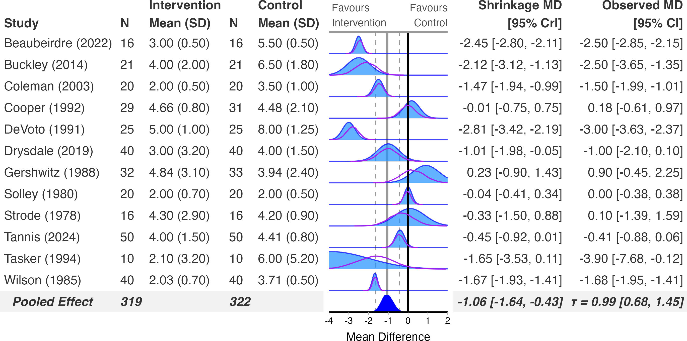

library(metafor)
library(RoBMA)
library(bayesfoRest)
cont_es <- escalc(
measure = "SMD",
m1i = Mean_Intervention, sd1i = SD_Intervention, n1i = N_Intervention,
m2i = Mean_Control, sd2i = SD_Control, n2i = N_Control,
data = cont_outcome) |>
dplyr::mutate(sei = sqrt(vi))
model_robma <- brma(data = cont_es,
yi = yi,
vi = vi,
measure = "SMD",
seed = 1234,
parallel = TRUE,
chains = 3,
sample = 5000,
burnin = 4000)RoBMA is different in kind from the other backends. Rather than fitting one random-effects model, it fits a model-averaged ensemble across models with and without an effect, heterogeneity, and publication-bias adjustment (selection models and PET-PEESE), then averages over them weighted by their posterior model probability. The pooled estimate and per-study shrinkage you get from bayes_forest() already reflect that averaging – there’s no separate “turn on bias-adjustment” step.
Fit the model
RoBMA takes effect sizes and sampling variances directly, computed with metafor::escalc(), the same way bayesmeta does. One real constraint: RoBMA’s measure only accepts "SMD", "ZCOR", "RR", "OR", "HR", "RD", "IRR", or "GEN" – there’s no raw mean difference option, so unlike the other continuous-outcome examples in this series this one stays on the standardised scale:
Create the forest plot
bayes_forest(
model = model_robma,
data = cont_outcome,
measure = "SMD",
study_var = Author,
year_var = Year,
mean_ctrl = Mean_Control,
mean_int = Mean_Intervention,
sd_ctrl = SD_Control,
sd_int = SD_Intervention,
n_ctrl = N_Control,
n_int = N_Intervention,
xlim = c(-6, 3)
)

Subgroup analysis and funnel plots
Subgroup refits work the same way as brms: subgroup = TRUE, subgroup_var = Subgroup refits RoBMA per subgroup automatically. funnel_plot() also works directly with a RoBMA model.
Prior sensitivity – two different roles for RoBMA
model_robma here is a brma fit (RoBMA::brma(), a single model with prior_effect/prior_heterogeneity), not a RoBMA::RoBMA() model-averaged ensemble, and it can be used as the primary model in forest_sens_plot(), sensitivity_plot(), ecdf_model_plot(), and ecdf_prior_plot() – each bf_*() prior in your priors list is translated to a RoBMA::prior() object and the model is refit under it, the same way brms, bayesmeta, and MetaStan do. bf_rhodes()’s log-t prior has no RoBMA/BayesTools equivalent and is the one family it can’t fit exactly; see ?bf_priors for the full support table.
sensitivity_plot(
model = model_robma,
data = cont_es,
priors = priors,
measure = "SMD"
)Separately, RoBMA is also the mechanism other backends use to add publication-bias-adjusted sections to their own sensitivity analysis: fit your main model with brms/bayesmeta/MetaStan as usual, then pass a RoBMA fit alongside it as robma_fit:
sensitivity_plot(
model = model_re, # a brms/bayesmeta/MetaStan fit
data = binary_es,
priors = priors,
measure = "OR",
robma_fit = model_robma,
incl_robma = TRUE,
incl_robma_bma = TRUE,
incl_pet_peese = TRUE,
incl_selection_weight = TRUE
)These answer different questions: the first refits model_robma itself under each prior; the second adds bias-adjusted sections alongside a different primary model’s own prior sensitivity. See vignette("sensitivity-analysis") for the full walkthrough of both, plus forest_sens_plot(), ecdf_model_plot(), and ecdf_prior_plot().